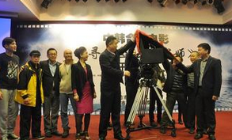
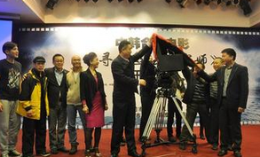
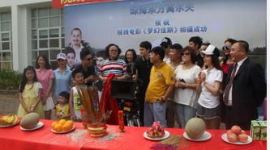
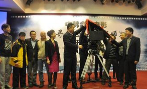

让影视投资简单
首部网大玄幻题材--《魔道》

- 融资目标：￥200 万
- 已 募 集： ￥80 万
- 剩余时间： 6天
- 项目介绍
- 项目交流
- 投资记录
- 项目进程
项目进展
2015.05.06
 

影片正式开机
网络大电影《于成龙》在晋中市榆次老城广场举行开机仪式，山西省委常委、宣传部长胡苏平出席开机仪式，并与总导演吴子牛一起为该剧开机揭彩。将在浙江、广西和山西等多地展开拍摄，预计于今年6月初杀青，今年下半年与广大观众见面。


2015.05.06
影片正式开机
网络大电影《于成龙》在晋中市榆次老城广场举行开机仪式，山西省委常委、宣传部长胡苏平出席开机仪式，并与总导演吴子牛一起为该剧开机揭彩。将在浙江、广西和山西等多地展开拍摄，预计于今年6月初杀青，今年下半年与广大观众见面。
2015.05.06
影片正式开机
网络大电影《于成龙》在晋中市榆次老城广场举行开机仪式，山西省委常委、宣传部长胡苏平出席开机仪式，并与总导演吴子牛一起为该剧开机揭彩。将在浙江、广西和山西等多地展开拍摄，预计于今年6月初杀青，今年下半年与广大观众见面。
项目发起方
星火影业文化传播有限公司是一家专注于视频细分市场的孵化平台，团队来自国内一线电视台媒体人及海归高学历青年，于2015年获得百万级天使投资。闪匡致力于生产原创纪录片等高质量视频，出品、发行及运营了10余档视频自媒体节目，内容围绕体育、潮流、跨文化、手工艺、科普等垂直领域，创造了多个细分市场的第一档和唯一一档视频自媒体节目。多档节目先后入围了国际女性影展、爱奇艺新生活影像展，并获得深圳广电新闻一等奖等多个奖项。
融资进度
- 融资目标：￥200 万
- 已 募 集： ￥80 万
- 剩余时间： 6天